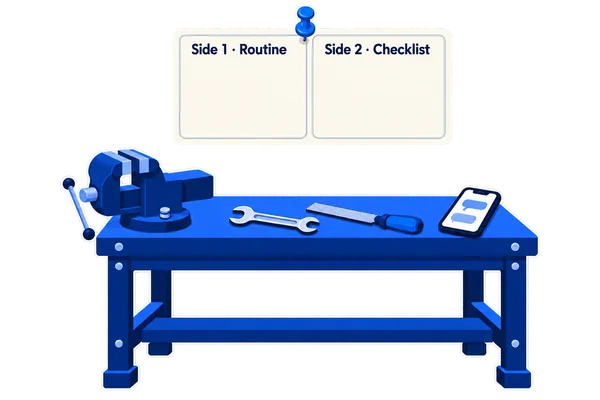

The Marking Card
Side 1 of this card is a 30-second routine for every AI answer. Side 2 is a short list of the things you always check.

Why this exists
An AI answer can sound sure and still be wrong.
It can get a date, a number or a name wrong. This card gives you a habit that catches these mistakes before you send the answer.
Your task. Put the four steps of the routine in the right order.
- Mark every fact, figure, date, name and source.
- Separate what a record supports from what it does not.
- Correct anything that is not clearly supported.
- Pause before you send the answer.
The card, both sides
This card has a routine and a checklist.
Side 1 shows the routine. Side 2 shows the checklist.
Your task. Tap the card to flip it and read both sides.
Run it every time. It takes 30 seconds.
Always check these five things.
Side 2, in detail · 1 of 2
Why does each check on side 2 matter?
Each check catches a different kind of mistake. Choose your place, and the examples change to match it.
Your task. Open Facts, Figures and Dates to read why each one matters.
Side 2, in detail · 2 of 2
Names and sources need a check too.
An AI tool can make up a name or a source that sounds real.
Your task. Open Names and Sources to read why each one matters.
Quick check · 1 of 5
Which check type fits “last updated on Tuesday”?
Each phrase has one bold part. The bold part matches one of the five checks on side 2.
Your task. Tap a check type, then tap Check my answer.
Quick check · 2 of 5
Which check type fits “150 students”?
Your task. Tap a check type, then tap Check my answer.
Quick check · 3 of 5
Which check type fits “As per university guidelines”?
Your task. Tap a check type, then tap Check my answer.
Quick check · 4 of 5
Which check type fits “the lab in-charge”?
Your task. Tap a check type, then tap Check my answer.
Quick check · 5 of 5
Which check type fits “never needs calibration”?
Your task. Tap a check type, then tap Check my answer.
Quick check
Here is your score for the quick check.
Your task. Tap a question number to go back to it.
Pin it up
Pin this card above your workstation.
The card is made to be laminated and pinned where you work. You can read it from arm's length in one look.
Your task. Answer the question about the card.
Why do you pin the card where you work?
At a glance
Here is the whole routine at a glance.
The routine has four steps. You run them on every AI answer, and then you send it.
Your task. Tap each card to see what the step means.
Try it now. Pick your last AI answer. Run the 30-second routine on it before you use it again.
Keep this card close to you.
On every AI task, run Mark, Separate, Correct and Pause before send. It takes 30 seconds, and it turns a guess into a checked answer.
Your task. Tap Print the card, then pin the paper where you work.